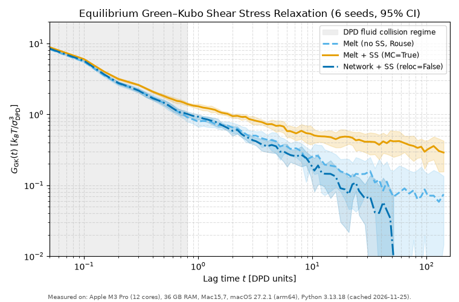
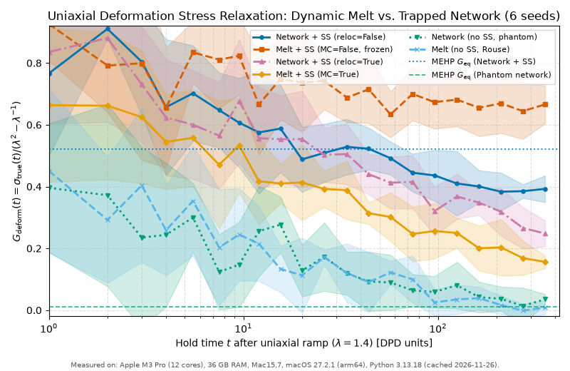
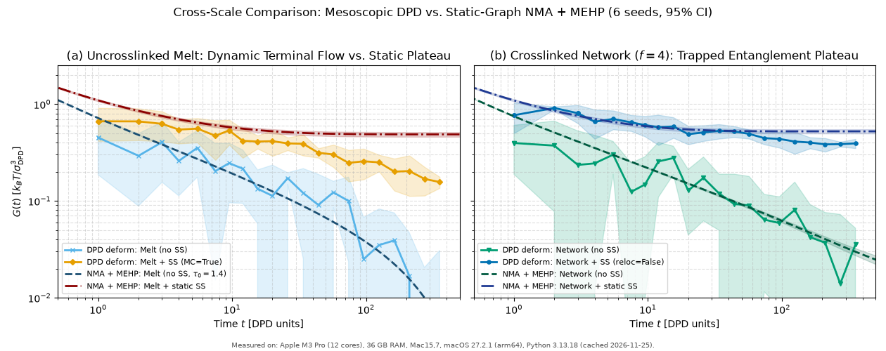
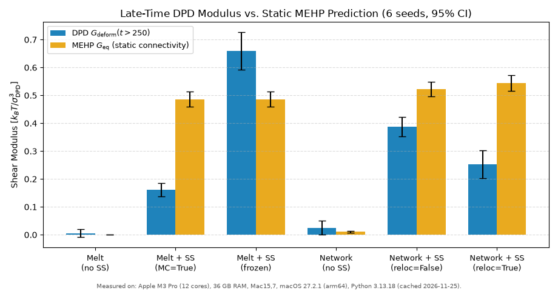

Note
Go to the end to download the full example code.
Multi-Scale Rheology: DPD Slip-Spring Melt vs. Crosslinked Network¶
Dissipative Particle Dynamics (DPD) with slip-springs bridges fast soft-core
mesoscopic dynamics and entangled polymer rheology (Langeloth et al. [LMBohmMullerPlathe13],
Schneider et al. [SFKarimiVarzanehMullerPlathe21]). Here we perform a cross-scale comparison of
the shear stress relaxation modulus \(G(t)\) across three methods in
pylimer-tools:
Equilibrium Green–Kubo via
DPDSimulator+Correlator(Ramírez et al. [RamirezSVL10]): sampling the five independent traceless stress tensor components in NVT,\[G_{\text{GK}}(t) = \frac{V}{5 k_B T} \left[ \sum_{\alpha < \beta} \langle \sigma_{\alpha\beta}(0)\sigma_{\alpha\beta}(t) \rangle + \frac{1}{6} \sum_{\alpha < \beta} \langle N_{\alpha\beta}(0) N_{\alpha\beta}(t) \rangle \right],\]where \(N_{\alpha\beta} = \sigma_{\alpha\alpha} - \sigma_{\beta\beta}\).
Uniaxial Step/Ramp Box Deformation (
config_box_deformation()): imposing a volume-preserving stretch \(\lambda = 1.4\) and monitoring the apparent modulus \(G_{\text{deform}}(t) = \sigma_{\text{true}}(t) / (\lambda^2 - \lambda^{-1})\).Static-Graph Normal Mode Analysis & Force Balance (
NormalModeAnalyzer,MEHPSimulator; Gusev and Bernhard [GB24], Gusev [Gus19], Bernhard and Gusev [BG25]):\[G_{\text{NMA+MEHP}}(t) = G_{\text{MEHP}} + \frac{k_B T}{V} \sum_{\lambda_i > 0} \exp\!\left(-\frac{2 \lambda_i t}{\tau_0}\right),\]where \(G_{\text{MEHP}} = \frac{k_B T}{V} \sum_s \Gamma_s\) is computed with the realized mean-squared bond length \(\langle b^2 \rangle\).
The key physical contrast is terminal relaxation vs. permanent elasticity:
in an uncrosslinked entangled melt, dynamic slip-spring shifting and chain-end
relocation (with_MC=True) allow \(G(t) \to 0\) at long times, whereas
freezing slip-springs (with_MC=False) or treating them as permanent bonds in
NMA/MEHP produces an artificial permanent plateau. In a crosslinked \(f=4\)
network, disabling relocation across crosslinks (config_allow_relocation_in_network(False))
preserves trapped entanglements and yields a permanent plateau above the phantom modulus.
from __future__ import annotations
import os
from pathlib import Path
import sys
import tempfile
from typing import Any, Dict, List, Tuple
import matplotlib.pyplot as plt
import numpy as np
import pandas as pd
if "__file__" in globals():
_examples_dir = str(Path(__file__).resolve().parents[1])
_dpd_dir = str(Path(__file__).resolve().parent)
for _p in (_examples_dir, _dpd_dir):
if _p not in sys.path:
sys.path.insert(0, _p)
from _dpd_rheology_runner import ( # noqa: E402
SystemCondition,
run_dpd_rheology_study,
)
from _example_cache import ( # noqa: E402
format_benchmark_footnote,
get_example_cache_path,
load_or_compute_cache,
)
import pylimer_tools_cpp as pt # noqa: E402
Minimal End-to-End API Workflow¶
Before loading the full 6-seed production ensemble, we demonstrate the workflow
on a compact melt (45 chains of length 25 at \(\rho = 3.0\)), logging shear
stress into a tempfile.TemporaryDirectory and evaluating the autocorrelation
via Correlator.
_rho_demo = 3.0
_k_demo = 2.0
_b2_demo = 3.0 / _k_demo
_n_chains_demo, _len_demo = 45, 25
_vol_demo = (_n_chains_demo * _len_demo) / _rho_demo
_box_l_demo = _vol_demo ** (1.0 / 3.0)
_gen = pt.MCUniverseGenerator(_box_l_demo, _box_l_demo, _box_l_demo)
_gen.set_seed(7)
_gen.config_nr_of_mc_steps(0)
_gen.set_bead_distance(float(np.sqrt(_b2_demo)))
_gen.set_mean_squared_bead_distance(_b2_demo)
_gen.add_solvent_chains(_n_chains_demo, _len_demo, solvent_atom_type=1)
_u_demo = _gen.get_universe()
_dpd_demo = pt.DPDSimulator(
_u_demo, crosslinker_type=2, slipspring_bond_type=9, seed="7"
)
_dpd_demo.assume_box_large_enough()
_dpd_demo.config_spring_constant(_k_demo)
_dpd_demo.create_slip_springs(int(0.20 * _u_demo.get_nr_of_atoms()), 9)
_dpd_demo.config_num_steps_dpd(25)
_dpd_demo.config_num_steps_mc(25)
_dpd_demo.run_simulation(n_steps=200, dt=0.05, with_MC=True)
with tempfile.TemporaryDirectory() as _tmpdir:
_stress_file = os.path.join(_tmpdir, "demo_stress.txt")
_cfg = pt.OutputConfiguration()
_cfg.int_values = [pt.ComputedIntValues.STEP]
_cfg.double_values = [
pt.ComputedDoubleValues.STRESS_XY,
pt.ComputedDoubleValues.STRESS_XZ,
pt.ComputedDoubleValues.STRESS_YZ,
]
_cfg.output_every = 1
_cfg.filename = _stress_file
_dpd_demo.config_step_output([_cfg])
_dpd_demo.run_simulation(n_steps=300, dt=0.05, with_MC=True)
_stress_arr = np.loadtxt(_stress_file, skiprows=1)
_corrs_demo = [pt.Correlator(16, 8, 2) for _ in range(3)]
for _idx, _corr in enumerate(_corrs_demo):
_corr.add_batch(_stress_arr[:, _idx + 1])
_corr.evaluate(norm=False)
_n_demo_pts = _corrs_demo[0].npcorr
_g0_demo = _vol_demo * float(np.mean([c.correlation[0] for c in _corrs_demo]))
_u_snap_demo = _dpd_demo.get_universe(with_slipsprings=True)
_spec_demo = pt.NormalModeAnalyzer.from_universe(_u_snap_demo).solve_exact()
_mehp_demo = pt.MEHPSimulator(_u_snap_demo, crosslinker_type=2)
_mehp_demo.run()
_g_mehp_demo = float(np.sum(_mehp_demo.get_gamma_factors(_b2_demo)) / _vol_demo)
print(
f"Demo melt (N_atoms={_u_demo.get_nr_of_atoms()}, SS={_dpd_demo.get_nr_of_slip_springs()}): "
f"G_GK(0)={_g0_demo:.3f}, NMA modes={_spec_demo.num_modes}, "
f"static MEHP plateau={_g_mehp_demo:.4f}"
)
Demo melt (N_atoms=1125, SS=225): G_GK(0)=16.080, NMA modes=1125, static MEHP plateau=0.5476
Load Cached 6-Seed Production Ensemble¶
All production trajectories (6 seeds, \(\rho_{\text{bead}} = 3.0\),
\(A = 25.0\), \(\sigma = 3.0\), \(k = 2.0\), \(\Delta t = 0.05\))
are loaded from cache (pass --recompute to regenerate).
cache_path = get_example_cache_path(
"dpd_slipspring_rheology_cache.npz", "dpd_simulations"
)
data: Dict[str, Any] = load_or_compute_cache(cache_path, run_dpd_rheology_study)
n_seeds = int(np.asarray(data["n_seeds"]).item())
nma_tau0 = float(np.asarray(data["nma_tau0"]).item())
lambda_stretch = float(np.asarray(data["lambda_stretch"]).item())
footnote = format_benchmark_footnote(data)
Loading cached example data from dpd_slipspring_rheology_cache.npz...
Summary Table of Thermodynamic & Mechanical Observables¶
_COND_LABELS: Dict[SystemCondition, str] = {
SystemCondition.MELT_NO_SS: "Melt (no SS, Rouse)",
SystemCondition.MELT_SS: "Melt + SS (MC=True)",
SystemCondition.MELT_SS_FROZEN: "Melt + SS (MC=False, frozen)",
SystemCondition.NET_NO_SS: "Network (no SS, phantom)",
SystemCondition.NET_SS_LOCKED: "Network + SS (reloc=False)",
SystemCondition.NET_SS_RELOC: "Network + SS (reloc=True)",
}
_COND_COLORS: Dict[SystemCondition, str] = {
SystemCondition.MELT_NO_SS: "#56B4E9",
SystemCondition.MELT_SS: "#E69F00",
SystemCondition.MELT_SS_FROZEN: "#D55E00",
SystemCondition.NET_NO_SS: "#009E73",
SystemCondition.NET_SS_LOCKED: "#0072B2",
SystemCondition.NET_SS_RELOC: "#CC79A7",
}
def _scalar(key: str) -> float:
return float(np.asarray(data[key]).item())
summary_rows: List[Dict[str, str]] = []
for cond in SystemCondition:
k = cond.value
temp_str = f"{_scalar(f'{k}_temp_mean'):.4f}" if f"{k}_temp_mean" in data else "—"
mehp_str = (
f"{_scalar(f'{k}_g_mehp_mean'):.4f} +/- {_scalar(f'{k}_g_mehp_ci'):.4f}"
if f"{k}_g_mehp_mean" in data
else "—"
)
summary_rows.append(
{
"Condition": _COND_LABELS[cond],
"<T>": temp_str,
"<b^2>": f"{_scalar(f'{k}_b2_mean'):.4f}",
"G_MEHP [kBT]": mehp_str,
"G_deform(t>250)": (
f"{_scalar(f'{k}_g_late_mean'):.4f} +/- {_scalar(f'{k}_g_late_ci'):.4f}"
),
}
)
print(pd.DataFrame(summary_rows).to_string(index=False))
print(footnote)
def _plot_band(
ax: plt.Axes,
x: np.ndarray,
prefix: str,
color: str,
label: str,
linestyle: str = "-",
linewidth: float = 2.0,
marker: str | None = None,
min_positive: bool = False,
) -> None:
"""Plot ensemble mean with 95% Student's t confidence band."""
y_mean = np.asarray(data[f"{prefix}_mean"], dtype=float)
y_lo = np.asarray(data[f"{prefix}_ci_lower"], dtype=float)
y_hi = np.asarray(data[f"{prefix}_ci_upper"], dtype=float)
if min_positive:
mask = y_mean > 0.0
x = x[mask]
y_mean = y_mean[mask]
y_lo = np.maximum(y_lo[mask], 1e-4)
y_hi = np.maximum(y_hi[mask], 1e-4)
ax.plot(
x,
y_mean,
color=color,
linestyle=linestyle,
linewidth=linewidth,
marker=marker,
markersize=3.8 if marker else 0.0,
label=label,
)
ax.fill_between(x, y_lo, y_hi, color=color, alpha=0.18)
Condition <T> <b^2> G_MEHP [kBT] G_deform(t>250)
Melt (no SS, Rouse) 1.0018 1.6338 0.0000 +/- 0.0000 0.0059 +/- 0.0141
Melt + SS (MC=True) 0.9908 1.6390 0.4859 +/- 0.0269 0.1608 +/- 0.0243
Melt + SS (MC=False, frozen) — 1.6224 — 0.6589 +/- 0.0675
Network (no SS, phantom) 1.0014 1.6235 0.0104 +/- 0.0025 0.0253 +/- 0.0245
Network + SS (reloc=False) 0.9917 1.6252 0.5225 +/- 0.0256 0.3876 +/- 0.0351
Network + SS (reloc=True) — 1.6149 0.5443 +/- 0.0285 0.2536 +/- 0.0500
Measured on: Apple M3 Pro (12 cores), 36 GB RAM, Mac15,7, macOS 27.2.1 (arm64), Python 3.13.18 (cached 2026-11-26).
1. Equilibrium Green–Kubo Stress Autocorrelation \(G_{\text{GK}}(t)\)¶
Using Correlator on the five traceless stress
tensor components in NVT:
At very short times (\(t < 0.8\)), fast pairwise DPD fluid collisions dominate (\(G_{\text{GK}}(0) \approx 15.5\)).
For \(t \ge 0.8\), slip-springs retard melt stress relaxation significantly relative to the unentangled Rouse melt, while chain-end relocation still drives terminal flow (\(G_{\text{GK}}(t) \to 0\)).
In fixed-box NVT, the crosslinked network’s stress fluctuations around its quenched equilibrium state measure only internal strand relaxation \(\Delta G(t) = G(t) - G_{\text{eq}}\) (not the static plateau).
t_gk = np.asarray(data["t_gk"], dtype=float)
fig1, ax1 = plt.subplots(figsize=(7.6, 5.0))
ax1.axvspan(0.05, 0.8, color="#ececec", alpha=0.85, label="DPD fluid collision regime")
for cond, ls in (
(SystemCondition.MELT_NO_SS, "--"),
(SystemCondition.MELT_SS, "-"),
(SystemCondition.NET_SS_LOCKED, "-."),
):
y_m = np.asarray(data[f"{cond.value}_g_gk_mean"], dtype=float)
y_lo = np.asarray(data[f"{cond.value}_g_gk_ci_lower"], dtype=float)
y_hi = np.asarray(data[f"{cond.value}_g_gk_ci_upper"], dtype=float)
valid = (t_gk >= 0.05) & (t_gk <= 150.0) & (y_m > 0.008)
ax1.plot(
t_gk[valid],
y_m[valid],
color=_COND_COLORS[cond],
linestyle=ls,
linewidth=2.1,
label=_COND_LABELS[cond],
)
ax1.fill_between(
t_gk[valid],
np.maximum(y_lo[valid], 5e-3),
np.maximum(y_hi[valid], 5e-3),
color=_COND_COLORS[cond],
alpha=0.18,
)
ax1.set_xscale("log")
ax1.set_yscale("log")
ax1.set_xlim(0.05, 160.0)
ax1.set_ylim(0.01, 20.0)
ax1.set_xlabel(r"Lag time $t$ [DPD units]")
ax1.set_ylabel(r"$G_{\mathrm{GK}}(t)$ [$k_B T / \sigma_{\mathrm{DPD}}^3$]")
ax1.set_title(
f"Equilibrium Green–Kubo Shear Stress Relaxation ({n_seeds} seeds, 95% CI)"
)
ax1.grid(True, which="both", linestyle="--", alpha=0.4)
ax1.legend(frameon=True, fontsize=8.8, loc="upper right")
fig1.text(0.5, 0.01, footnote, ha="center", fontsize=7.5, color="#555555")
plt.tight_layout(rect=(0.0, 0.03, 1.0, 1.0))
plt.show()

2. Uniaxial Step/Ramp Deformation Relaxation \(G_{\text{deform}}(t)\)¶
Applying a volume-preserving uniaxial stretch (\(\lambda = 1.4\)) directly exposes both the relaxing stress and the permanent elastic plateau:
Melt + SS (MC=True) relaxes below the static plateau toward zero via slip-spring shifting and chain-end relocation.
Melt + SS (MC=False) freezes slip-springs as permanent crosslinks, locking in an artificial rubbery plateau.
Network + SS (reloc=False) traps entanglements permanently, whereas reloc=True allows slip-springs to escape across crosslinks and softens the network toward the phantom plateau (Network, no SS).
t_def = np.asarray(data["t_def"], dtype=float)
fig2, ax2 = plt.subplots(figsize=(8.0, 5.2))
plot_specs: Tuple[Tuple[SystemCondition, str, str], ...] = (
(SystemCondition.NET_SS_LOCKED, "-", "o"),
(SystemCondition.MELT_SS_FROZEN, "--", "s"),
(SystemCondition.NET_SS_RELOC, "-.", "^"),
(SystemCondition.MELT_SS, "-", "D"),
(SystemCondition.NET_NO_SS, ":", "v"),
(SystemCondition.MELT_NO_SS, "--", "x"),
)
for cond, ls, mk in plot_specs:
_plot_band(
ax2,
t_def,
f"{cond.value}_g_def",
color=_COND_COLORS[cond],
label=_COND_LABELS[cond],
linestyle=ls,
marker=mk,
)
ax2.axhline(
_scalar("net_ss_locked_g_mehp_mean"),
color=_COND_COLORS[SystemCondition.NET_SS_LOCKED],
linestyle=":",
linewidth=1.4,
alpha=0.85,
label=r"MEHP $G_{\mathrm{eq}}$ (Network + SS)",
)
ax2.axhline(
_scalar("net_no_ss_g_mehp_mean"),
color=_COND_COLORS[SystemCondition.NET_NO_SS],
linestyle="--",
linewidth=1.2,
alpha=0.8,
label=r"MEHP $G_{\mathrm{eq}}$ (Phantom network)",
)
ax2.set_xscale("log")
ax2.set_xlim(1.0, 420.0)
ax2.set_ylim(-0.02, 0.92)
ax2.set_xlabel(r"Hold time $t$ after uniaxial ramp ($\lambda = 1.4$) [DPD units]")
ax2.set_ylabel(
r"$G_{\mathrm{deform}}(t) = \sigma_{\mathrm{true}}(t) / (\lambda^2 - \lambda^{-1})$"
)
ax2.set_title(
f"Uniaxial Deformation Stress Relaxation: Dynamic Melt vs. Trapped Network ({n_seeds} seeds)"
)
ax2.grid(True, which="both", linestyle="--", alpha=0.4)
ax2.legend(frameon=True, fontsize=8.2, ncol=2, loc="upper right")
fig2.text(0.5, 0.01, footnote, ha="center", fontsize=7.5, color="#555555")
plt.tight_layout(rect=(0.0, 0.03, 1.0, 1.0))
plt.show()

3. Cross-Scale Comparison: DPD vs. Static-Graph NMA + MEHP¶
Comparing DPD against NormalModeAnalyzer +
MEHPSimulator (\(\tau_0 = 1.4\) DPD time
units per Rouse bond relaxation time):
(a) Uncrosslinked Melt: without slip-springs, NMA quantitatively tracks the DPD Rouse decay down to terminal flow. With slip-springs, static NMA+MEHP locks onto a spurious permanent plateau \(G_{\text{MEHP}} > 0\), whereas dynamic DPD (
MC=True) relaxes past it toward zero.(b) Crosslinked Network: permanent chemical crosslinks and trapped slip-springs yield consistent long-time elastic plateaus across scales.
t_nma = np.asarray(data["t_nma"], dtype=float)
fig3, (ax3a, ax3b) = plt.subplots(1, 2, figsize=(12.6, 5.0), sharex=True, sharey=True)
# Panel (a): Melt
_plot_band(
ax3a,
t_def,
"melt_no_ss_g_def",
color=_COND_COLORS[SystemCondition.MELT_NO_SS],
label="DPD deform: Melt (no SS)",
marker="x",
)
_plot_band(
ax3a,
t_def,
"melt_ss_g_def",
color=_COND_COLORS[SystemCondition.MELT_SS],
label="DPD deform: Melt + SS (MC=True)",
marker="D",
)
_plot_band(
ax3a,
t_nma,
"melt_no_ss_g_nma_total",
color="#1b4f72",
label=r"NMA + MEHP: Melt (no SS, $\tau_0=1.4$)",
linestyle="--",
)
_plot_band(
ax3a,
t_nma,
"melt_ss_g_nma_total",
color="#8b0000",
label="NMA + MEHP: Melt + static SS",
linestyle="-.",
)
ax3a.set_title("(a) Uncrosslinked Melt: Dynamic Terminal Flow vs. Static Plateau")
ax3a.set_xlabel(r"Time $t$ [DPD units]")
ax3a.set_ylabel(r"$G(t)$ [$k_B T / \sigma_{\mathrm{DPD}}^3$]")
ax3a.set_xscale("log")
ax3a.set_yscale("log")
ax3a.set_xlim(0.5, 500.0)
ax3a.set_ylim(0.01, 2.5)
ax3a.grid(True, which="both", linestyle="--", alpha=0.4)
ax3a.legend(frameon=True, fontsize=8.0, loc="lower left")
# Panel (b): Network
_plot_band(
ax3b,
t_def,
"net_no_ss_g_def",
color=_COND_COLORS[SystemCondition.NET_NO_SS],
label="DPD deform: Network (no SS)",
marker="v",
)
_plot_band(
ax3b,
t_def,
"net_ss_locked_g_def",
color=_COND_COLORS[SystemCondition.NET_SS_LOCKED],
label="DPD deform: Network + SS (reloc=False)",
marker="o",
)
_plot_band(
ax3b,
t_nma,
"net_no_ss_g_nma_total",
color="#005a40",
label="NMA + MEHP: Network (no SS)",
linestyle="--",
)
_plot_band(
ax3b,
t_nma,
"net_ss_locked_g_nma_total",
color="#1f3a93",
label="NMA + MEHP: Network + static SS",
linestyle="-.",
)
ax3b.set_title("(b) Crosslinked Network ($f=4$): Trapped Entanglement Plateau")
ax3b.set_xlabel(r"Time $t$ [DPD units]")
ax3b.grid(True, which="both", linestyle="--", alpha=0.4)
ax3b.legend(frameon=True, fontsize=8.0, loc="lower left")
fig3.suptitle(
f"Cross-Scale Comparison: Mesoscopic DPD vs. Static-Graph NMA + MEHP ({n_seeds} seeds, 95% CI)"
)
fig3.text(0.5, 0.01, footnote, ha="center", fontsize=7.5, color="#555555")
plt.tight_layout(rect=(0.0, 0.03, 1.0, 0.95))
plt.show()

4. Late-Time DPD Modulus vs. Static MEHP Plateau Summary¶
Quantitative comparison of the late-time DPD deformation modulus \(G_{\text{deform}}(t > 250)\) against the equilibrium force-balance modulus \(G_{\text{MEHP}}\) across all conditions.
categories: List[Tuple[str, SystemCondition, str | None]] = [
("Melt\n(no SS)", SystemCondition.MELT_NO_SS, "melt_no_ss"),
("Melt + SS\n(MC=True)", SystemCondition.MELT_SS, "melt_ss"),
("Melt + SS\n(frozen)", SystemCondition.MELT_SS_FROZEN, "melt_ss"),
("Network\n(no SS)", SystemCondition.NET_NO_SS, "net_no_ss"),
("Network + SS\n(reloc=False)", SystemCondition.NET_SS_LOCKED, "net_ss_locked"),
("Network + SS\n(reloc=True)", SystemCondition.NET_SS_RELOC, "net_ss_reloc"),
]
x_pos = np.arange(len(categories), dtype=float)
width = 0.36
dpd_means = [_scalar(f"{cond.value}_g_late_mean") for _, cond, _ in categories]
dpd_cis = [_scalar(f"{cond.value}_g_late_ci") for _, cond, _ in categories]
mehp_means = [
_scalar(f"{mk}_g_mehp_mean") if mk is not None else 0.0 for _, _, mk in categories
]
mehp_cis = [
_scalar(f"{mk}_g_mehp_ci") if mk is not None else 0.0 for _, _, mk in categories
]
fig4, ax4 = plt.subplots(figsize=(9.2, 4.8))
ax4.bar(
x_pos - 0.5 * width,
dpd_means,
width,
yerr=dpd_cis,
capsize=4,
color="#0072B2",
alpha=0.88,
label=r"DPD $G_{\mathrm{deform}}(t > 250)$",
)
ax4.bar(
x_pos + 0.5 * width,
mehp_means,
width,
yerr=mehp_cis,
capsize=4,
color="#E69F00",
alpha=0.88,
label=r"MEHP $G_{\mathrm{eq}}$ (static connectivity)",
)
ax4.set_xticks(x_pos)
ax4.set_xticklabels([lbl for lbl, _, _ in categories], fontsize=9.0)
ax4.set_ylabel(r"Shear Modulus [$k_B T / \sigma_{\mathrm{DPD}}^3$]")
ax4.set_title(
f"Late-Time DPD Modulus vs. Static MEHP Prediction ({n_seeds} seeds, 95% CI)"
)
ax4.grid(True, axis="y", linestyle="--", alpha=0.45)
ax4.legend(frameon=True, fontsize=9.2, loc="upper left")
fig4.text(0.5, 0.01, footnote, ha="center", fontsize=7.5, color="#555555")
plt.tight_layout(rect=(0.0, 0.03, 1.0, 1.0))
plt.show()

Total running time of the script: (0 minutes 1.072 seconds)